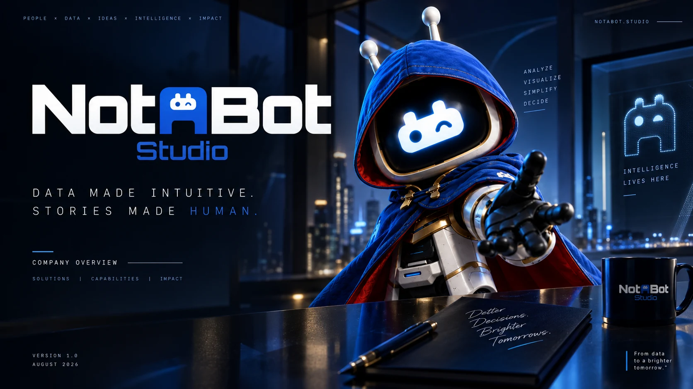

Training
Build practical Data & AI capability. Focused learning for individuals, leaders and teams.
Explore TrainingNotABot Studio
We help people learn to use Data & AI, and help organisations turn complex information into clearer decisions.
Find practical learning for your role, with outcomes, time and indicative pricing.
Explore individual training →For my organisationExplore help with your people’s skills, a business challenge, or both.
Explore organisational support →I’m not sure yetAnswer a few simple questions. Get a starting point and understand why it might fit.
Find my starting point →Build practical Data & AI capability. Focused learning for individuals, leaders and teams.
Explore TrainingAddress organisational data, reporting, analytics and AI challenges, with hands-on support.
Explore ConsultancySome challenges need both learning and practical delivery. See how Training and Consultancy connect.
NotABot is a founder-led data and analytics design studio. We connect practical learning, thoughtful design and hands-on data work.
